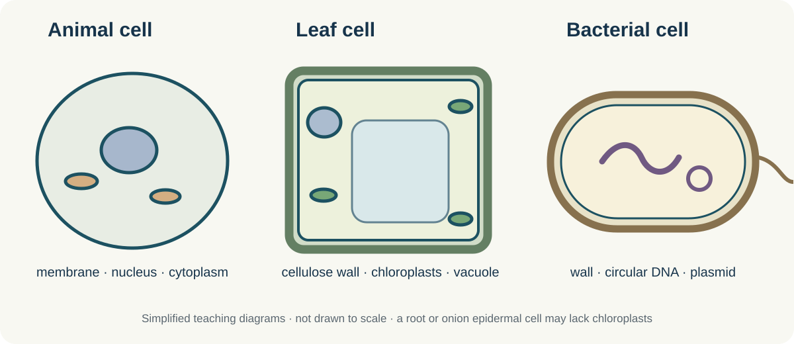

Year 9 · school teaching material
Cells and practical biology
Six linked topics from the school slides and handouts. Read the explanations, check the worked calculations, then try the timed question bank.
1. Cell structure
Typical animal and plant cells are eukaryotic: their DNA is enclosed in a nucleus. Bacteria are prokaryotic and have no membrane-bound nucleus. Their main DNA is a circular loop in the cytoplasm; small extra DNA rings are plasmids. All three have a cell membrane and cytoplasm. Bacteria also have ribosomes, although these are smaller than eukaryotic ribosomes.

| Structure | Function | Where to expect it |
|---|---|---|
| Nucleus | Contains DNA that carries instructions for making proteins | Typical animal and plant cells |
| Cytoplasm | Site of many cell reactions | All three cell types |
| Cell membrane | Controls passage of substances in and out | All three cell types |
| Mitochondria | Site of aerobic respiration | Animal and plant cells |
| Ribosomes | Protein synthesis | All three cell types |
| Chloroplasts | Photosynthesis where present | Green plant cells, such as leaf cells |
| Cellulose wall | Support and rigidity | Plant cells; bacterial walls are made of a different material |
| Permanent vacuole | Cell sap; helps maintain turgor | Typical plant cells |
Common trap: “Plant cell” does not mean every plant cell has chloroplasts. The onion epidermis from a bulb grows underground and normally lacks them.
2. Size, units and magnification
Magnification describes how many times larger the image is than the specimen. Resolution is the ability to distinguish two nearby points as separate. Electron microscopes have higher resolution and reveal much smaller details than light microscopes. A sharper image is not guaranteed merely by enlarging a blurred image.
Unit ladder: 1 mm = 1,000 μm; 1 μm = 1,000 nm. Convert image and actual size to the same unit before dividing.
Worked example
An image is 24 mm wide at ×800. Actual width = 24 ÷ 800 = 0.030 mm = 30 μm. Check by multiplying: 0.030 mm × 800 = 24 mm.
If a cell is 40 μm wide and its drawing is 20 mm wide, first convert 20 mm to 20,000 μm. Magnification = 20,000 ÷ 40 = ×500.
For a row of approximately equal cells across a measured microscope field, estimated cell width = field diameter ÷ number of cells. State the estimate and unit. The field diameter changes when magnification changes, so use the value measured at that magnification.
3. Required Practical 1 · microscopy
The school practical uses a light microscope to observe plant and animal cells and make labelled biological drawings with a scale or magnification. A thin onion epidermis specimen is laid flat on a slide. Stain improves contrast; a coverslip lowered at an angle helps avoid trapped air. Start with the lowest-power objective, then bring the image into focus and use fine focus to sharpen it.
Total microscope magnification = eyepiece magnification × objective magnification. For a ×10 eyepiece and ×40 objective, the total is ×400. This differs from the magnification of a printed image, which uses image size ÷ actual size.
A good biological drawing uses clear single lines, no shading, a title, neat non-crossing label lines, and a scale or stated magnification. Draw only what you observe. Onion bulb epidermal cells typically show a wall and sometimes a stained nucleus; do not add chloroplasts automatically.

4. Specialised cells and differentiation
Differentiation is the process by which an unspecialised cell develops structures suited to a particular function. Embryonic stem cells can form many types of cells. Adult stem cells form a more limited range. Plant meristems at root and shoot tips contain cells that continue dividing and differentiating.
| Cell | Job | Structure linked to job |
|---|---|---|
| Red blood cell | Carry oxygen | Haemoglobin binds oxygen; biconcave shape gives a large surface area; no nucleus leaves more space for haemoglobin |
| Neurone | Transmit impulses | Long axon spans distances; branched dendrites connect to other cells |
| Muscle cell | Contract for movement | Sliding protein filaments cause contraction; many mitochondria release energy |
| Sperm cell | Fertilise an egg | Tail moves; mitochondria supply energy; acrosome contains enzymes; nucleus has half the usual chromosome number |
| Root hair cell | Absorb water and mineral ions | Long extension increases surface area; many mitochondria support active transport of mineral ions |
| Palisade cell | Photosynthesise | Many chloroplasts absorb light in the leaf |
| Xylem | Transport water and mineral ions | Dead hollow tubes give a continuous route; lignin strengthens walls |
| Phloem | Transport dissolved sugars | Sieve plates allow movement; companion cells provide energy for loading |
In an exam explanation, name the feature, state how it changes what the cell can do, then link it to the cell's job.
5. Bacterial cells and binary fission
Most bacteria are smaller than typical animal or plant cells. They have a cell membrane, cytoplasm, ribosomes and a cell wall, but no nucleus or membrane-bound organelles. Some have plasmids; some have a flagellum. The sketch shows one possible bacterial form. The main circular DNA and any plasmids are copied before the cell divides by binary fission. Two daughter cells result.
Worked doubling question
Starting from one cell, seven divisions give 27 = 128 cells. If division takes 30 minutes, elapsed time = 7 × 30 = 210 minutes = 3.5 hours. Count divisions, not the number of cells in the final population.
Real populations do not double indefinitely: nutrients, space and conditions can limit growth. Treat simple doubling problems as an idealised model.
6. Aseptic technique and practical reasoning
Aseptic technique reduces contamination of a culture by unwanted microorganisms and reduces exposure to microorganisms. In the school investigation, sterile equipment, minimal opening of the dish, a labelled base and suitable controls help make the results interpretable. A sterile-water control is expected to show no growth if contamination has been avoided. The teacher's method uses four short pieces of tape rather than sealing a plate fully, and inverts plates to keep condensation from dripping onto the agar.
Hazard → risk → control: microbial material → possible exposure/infection → follow the teacher's containment, cleaning and disposal instructions. A flame → burns → keep it in the designated safe position and follow supervision. The practical is carried out only in a supervised school lab.
Agar supplies water and nutrients. An autoclave uses high-temperature steam under pressure to sterilise equipment and waste. If the negative control grows colonies, the source of those colonies cannot be assumed to be the intended sample: contamination is a plausible explanation.
Adapted in original wording from the supplied Year 9 cell, microscopy, specialisation, bacterial and aseptic technique lessons and handouts. The practice questions are not the teacher's actual assessment.